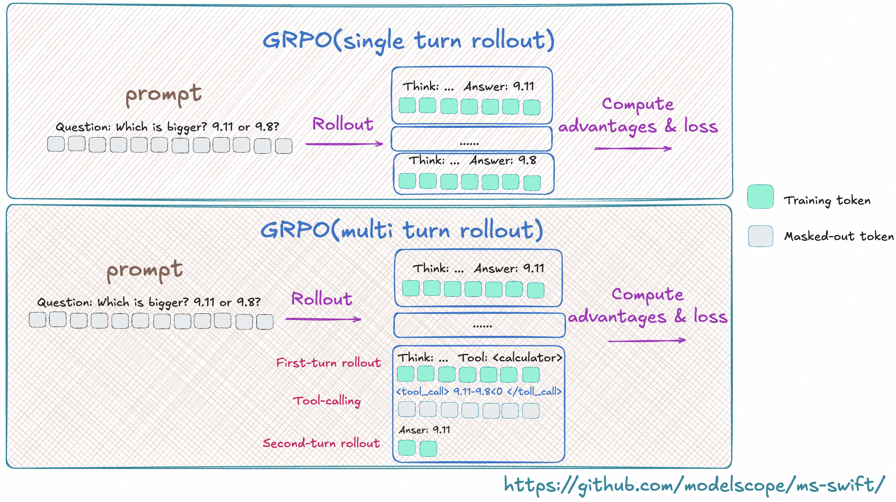

Multi-turn Training
Note The multi-turn training logic was refactored in ms-swift 3.8. If your ms-swift version is earlier than 3.8, please consult the documentation for that version.
In reinforcement-learning scenarios, the model may need to interact with the environment over multiple turns (e.g., tool calls). This interactive training requires the model to carry out continuous reasoning based on the feedback from the environment. This document explains in detail how to customise the multi-turn training workflow in GRPO training.
The figure below shows a typical multi-turn training process, where the model may perform several rollout rounds that include environment interaction, tool calls, and so on:

MultiTurnScheduler
MultiTurnScheduler is an abstract base class that provides the default multi-turn dialogue-management logic.
Its workflow is illustrated below:

The scheduler is responsible for two core functions:
Termination check — decide whether the current turn of inference should stop via
check_finished.Inference request construction — build the request object for the next turn via
step.
Key methods of the abstract base class MultiTurnScheduler:
class MultiTurnScheduler(ABC):
def __init__(self, max_turns: Optional[int] = None, *args, **kwargs):
self.max_turns = max_turns
def step(self, infer_request: 'RolloutInferRequest', response_choice: 'ChatCompletionResponseChoice',
current_turn: int) -> Dict:
"""
Handle the transition between dialogue turns.
Args:
infer_request: current inference request
response_choice: response of the current turn
current_turn: current turn index (starting from 1)
Returns:
Dict[str, Any]: a dict containing the result of this turn
- infer_request (required): the inference request for the next turn
- response_token_ids (optional): token IDs of each rollout response
- response_loss_mask (optional): loss mask of each rollout response
- rollout_logprobs (optional): token logps of each rollout response
- rollout_infos (optional): extra information
"""
raise NotImplementedError
def check_finished(self, infer_request: 'RolloutInferRequest', response_choice: 'ChatCompletionResponseChoice',
current_turn: int) -> bool:
"""
Default termination logic for multi-turn rollout.
Termination conditions:
1. The response is truncated (finish_reason == 'length').
2. The dialogue reaches the maximum number of turns (if max_turns is set).
Args:
infer_request: the inference request
response_choice: response choice containing finish_reason
current_turn: current turn index
Returns:
bool: True to stop, False to continue
"""
if response_choice.finish_reason == 'length':
return True
if self.max_turns and current_turn >= self.max_turns:
return True
return False
Arguments passed to step and check_finished:
infer_request: current inference request
response_choice: inference result of the current turn
current_turn: current turn index (starting from 1)
Input example (click to expand)
infer_request
"""
RolloutInferRequest(
messages=[
{'role': 'system', 'content': 'A conversation between User and Assistant. The user asks a question, and the Assistant solves it. The assistant first thinks about the reasoning process in the mind and then provides the user with the answer. The reasoning process and answer are enclosed within <think> </think> and <answer> </answer> tags, respectively, i.e., <think> reasoning process here </think><answer> answer here </answer>\n'}, {'role': 'user', 'content': 'What is the value of $\\sqrt{36 \\times \\sqrt{16}}$?'},
{'role': 'assistant', 'content': 'To find the value of \\(\\sqrt{36 \\times \\sqrt{16}}\\), we will break down the problem step-by-step.\n\nFirst, we need to evaluate the inner square root:\n\\[\n\\sqrt{16}\n\\]\nWe know that:\n\\[\n4^2 = 16 \\implies \\sqrt{16} = 4\n\\]\n\nNext, we substitute this result back into the original expression:\n\\[\n\\sqrt{36 \\times \\sqrt{16}} = \\sqrt{36 \\times 4}\n\\]\n\nNow, we need to evaluate the product inside the square root:\n\\[\n36 \\times 4 = 144\n\\]\n\nSo, the expression simplifies to:\n\\[\n\\sqrt{144}\n\\]\n\nFinally, we determine the square root of 144:\n\\[\n\\sqrt{144} = 12\n\\]\n\nThus, the value of \\(\\sqrt{36 \\times \\sqrt{16}}\\) is:\n\\[\n\\boxed{12}\n\\]'}
],
images=[],
audios=[],
videos=[],
tools=None,
objects={},
data_dict={
'problem': 'What is the value of $\\sqrt{36 \\times \\sqrt{16}}$?',
'solution': "To solve the problem, we need to evaluate the expression \\(\\sqrt{36 \\times \\sqrt{16}}\\).\n\nWe can break down the steps as follows:\n\n1. Evaluate the inner square root: \\(\\sqrt{16}\\).\n2. Multiply the result by 36.\n3. Take the square root of the product obtained in step 2.\n\nLet's compute this step by step using Python code for accuracy.\n```python\nimport math\n\n# Step 1: Evaluate the inner square root\ninner_sqrt = math.sqrt(16)\n\n# Step 2: Multiply the result by 36\nproduct = 36 * inner_sqrt\n\n# Step 3: Take the square root of the product\nfinal_result = math.sqrt(product)\nprint(final_result)\n```\n```output\n12.0\n```\nThe value of \\(\\sqrt{36 \\times \\sqrt{16}}\\) is /\\(\\boxed{12}\\)."
}
)
"""
response_choice
"""
ChatCompletionResponseChoice(
index=0,
message=ChatMessage(
role='assistant',
content='To find the value of \\(\\sqrt{36 \\times \\sqrt{16}}\\), we will break down the problem step-by-step.\n\nFirst, we need to evaluate the inner square root:\n\\[\n\\sqrt{16}\n\\]\nWe know that:\n\\[\n4^2 = 16 \\implies \\sqrt{16} = 4\n\\]\n\nNext, we substitute this result back into the original expression:\n\\[\n\\sqrt{36 \\times \\sqrt{16}} = \\sqrt{36 \\times 4}\n\\]\n\nNow, we need to evaluate the product inside the square root:\n\\[\n36 \\times 4 = 144\n\\]\n\nSo, the expression simplifies to:\n\\[\n\\sqrt{144}\n\\]\n\nFinally, we determine the square root of 144:\n\\[\n\\sqrt{144} = 12\n\\]\n\nThus, the value of \\(\\sqrt{36 \\times \\sqrt{16}}\\) is:\n\\[\n\\boxed{12}\n\\]', tool_calls=None),
finish_reason='stop',
logprobs=None,
messages=None)
"""
# response_choice.messages will be copied at the end of multi-turn inference.
The default check_finished logic stops inference in the following cases:
The model reply is truncated, i.e. exceeds
max_completion_length.The number of inference turns exceeds the specified maximum.
For the full default multi-turn rollout logic, see the run method of the class.
You can override run to implement a completely custom workflow.
Setting multi-turn parameters
Specify the scheduler via multi_turn_scheduler in the swift rollout command:
swift rollout \
--model Qwen/Qwen3-1.7B \
--use_async_engine true \
--multi_turn_scheduler thinking_tips_scheduler \
--vllm_max_model_len 32768 \
--vllm_gpu_memory_utilization 0.8 \
--max_turns 3
With the
external_pluginsargument you can register your own local scheduler with ms-swift. Refer to the plugin code.
A full multi-turn training script can be found here.
For multi-turn rollout we use AsyncEngine to perform efficient batched asynchronous sampling.
AsyncEngine reduces compute bubbles in multi-turn inference:

Use the use_async_engine argument in the rollout command to specify the engine type (async is the default).
Note: The async engine and the custom multi-turn interaction logic below are currently only supported in server mode. For multi-turn interaction logic in colocate mode, please refer to the _colocate_multi_turn_infer method in RolloutTrainerMixin.
Advanced topics
Customising the interaction logic
In the default logic we treat the whole multi-turn rollout as one trajectory when computing the loss. This assumes the model’s history is not modified during interaction.
In some scenarios you may need to dynamically change the history during rollout (e.g., compressing context). In that case each turn should be treated as a separate trajectory.
A common scenario is for “thinking” models: during real inference the model keeps only the last reasoning step and discards previous ones.
For such cases override the run method in your scheduler to return the result for each rollout turn individually.
The built-in ThinkingModelTipsScheduler shows how to fully customise multi-turn inference by overriding run().
See the implementation in multi_turn.py.
NOTE: In this scenario, the data for a single trajectory is split into multiple records. When computing rewards, you must assign the same reward to every record that belongs to the same trajectory.
The complete trajectory can be accessed via trajectory_inputs in kwargs.
For a concrete implementation, see the MultiTurnThinkingTips class
Multimodal Data Override
In multimodal, multi-turn interactions, you may need to dynamically add, delete, or modify multimodal data during the conversation and ensure these changes are synchronized to the trainer.
Implementation: Use rollout_infos to override the original multimodal content in the dataset by specifying the corresponding keys.
Supported override keys: images, audios, videos.
For details, see DeepEyes Scheduler.
Returning response token IDs
In the default workflow the scheduler returns text, the trainer re-encodes it to token IDs for training.
To avoid this extra encoding, have the scheduler return response_token_ids directly.
Steps:
Read the
token_idsattribute fromresponse_choiceto obtain the sequence.Include
response_token_idsin the dict returned bystep/run; the trainer can then use them directly.
For a concrete implementation, refer to the ThinkingModelTipsScheduler class
Loss mask
When the environment or a tool call returns content that becomes part of the model response, you may want to mask it so the model is not penalised on externally generated tokens.
You can set the loss mask in two ways.
1. Using loss_scale
ms-swift provides the loss_scale parameter to scale or mask parts of the response.
For example, --loss_scale last_round zeroes out the loss for all but the last round.
Custom loss_scale can also be implemented; see the customisation guide.
Note: In GRPO,
loss_scaleserves only as a mask; it does not scale the loss.
2. Using loss_mask
In step or run, set response_loss_mask to define a custom mask.
This requires returning response_token_ids; the mask must be the same length.
When response_loss_mask is provided, loss_scale is ignored.
For how to return response_loss_mask, see the ToolCallScheduler class
Accessing additional dataset information in scheduler
Set --vllm_server_pass_dataset on the training side to pass other dataset columns to the scheduler.
They can be read from infer_request.data_dict.
Training-Inference-Mismatch
Swift >= 3.11 supports returning rollout logprobs from the vLLM side to address training-inference mismatch issues. For details, please refer to this document.
In multi-turn training, if rollout_importance_sampling_mode is enabled, the framework automatically collects log probabilities from each rollout turn to correct off-policy issues.
Default Behavior:
When using the default
runmethod, the framework automatically extracts log probabilities fromresponse_choice.logprobsThese logprobs are passed to the trainer along with
response_token_idsandresponse_loss_mask
Notes for Custom Schedulers:
If you modify the response in your step method (e.g., truncation, adding content), you need to return the corresponding rollout_logprobs:
Key Rules:
The length of
rollout_logprobsshould equal the count of 1s inresponse_loss_maskFor tokens with
loss_mask=0(e.g., user-added prompts, tool return results), no logprobs are neededIf
stepdoes not returnrollout_logprobs, the framework will automatically extract them fromresponse_choice.logprobs
When Overriding the run Method:
If you completely override the run method, you need to manually collect and pass rollout_logprobs
For implementation, please refer to here